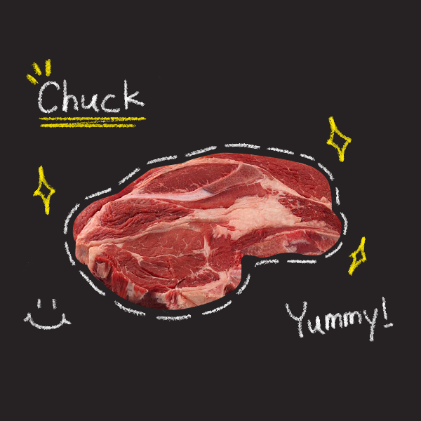
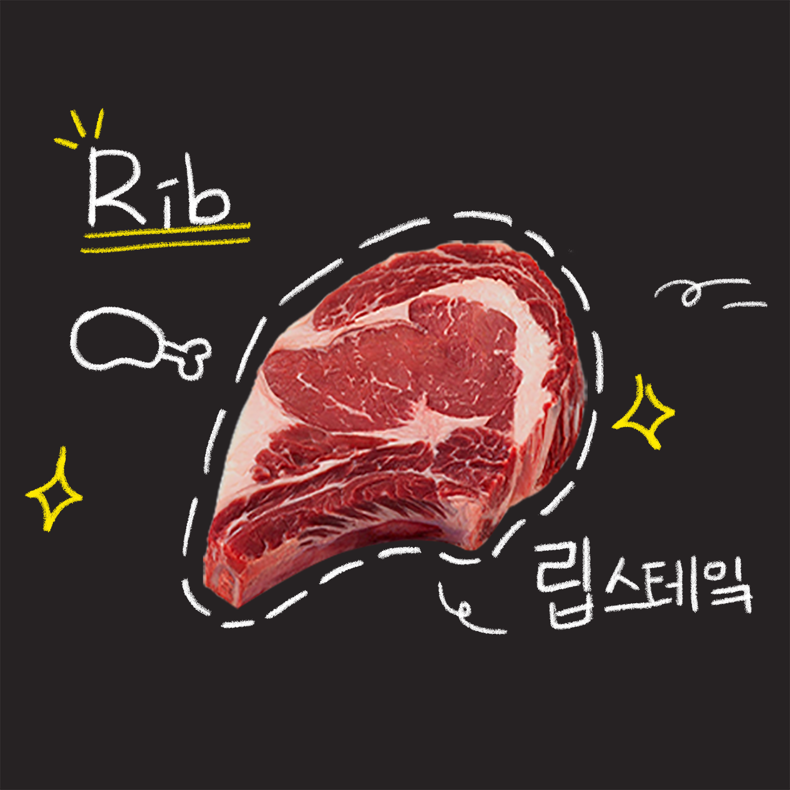
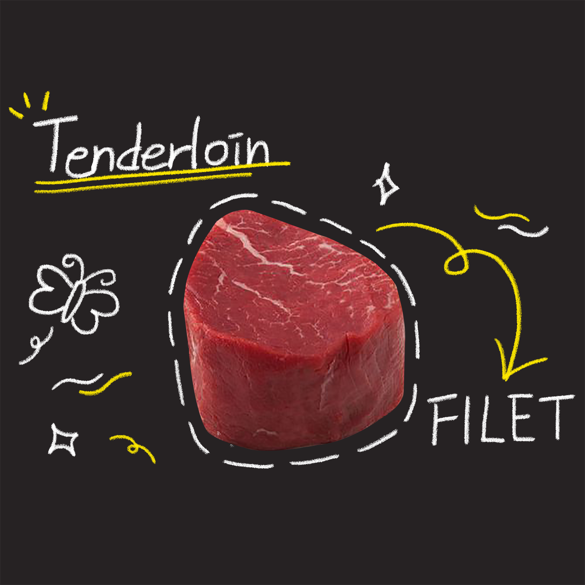
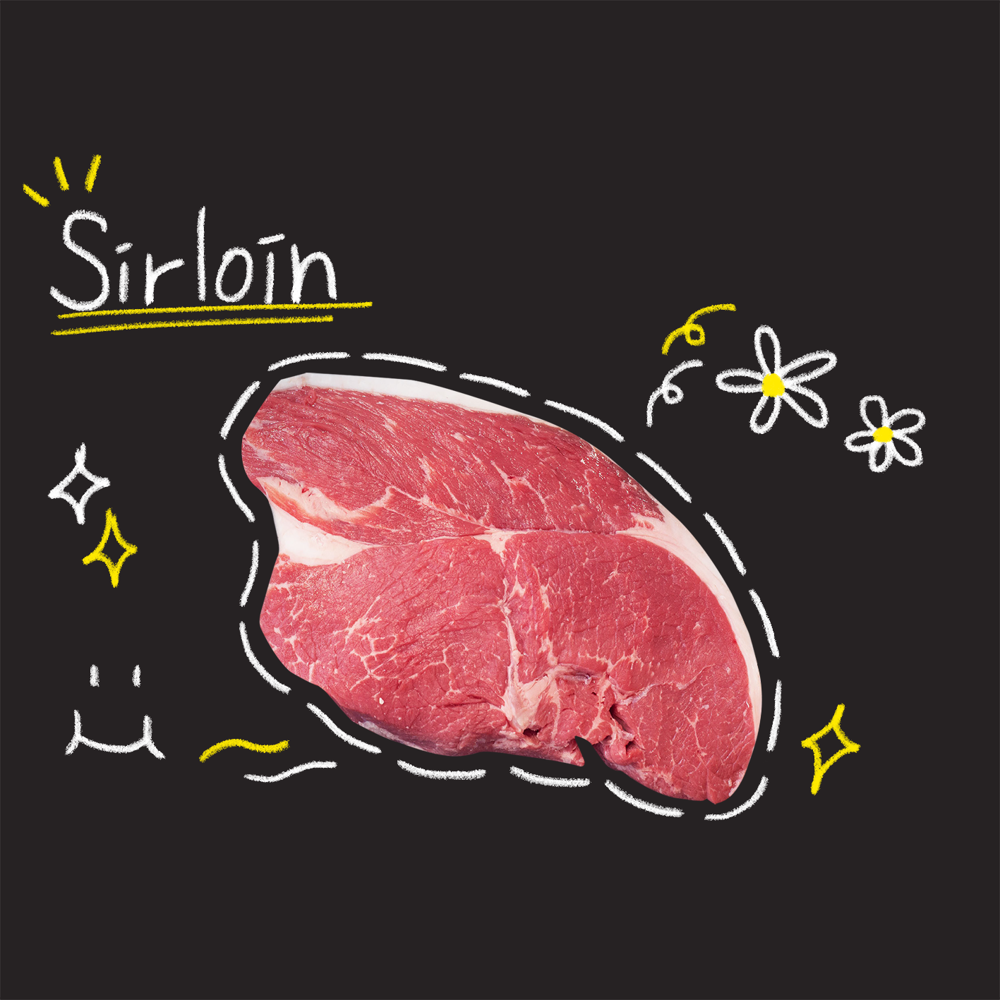
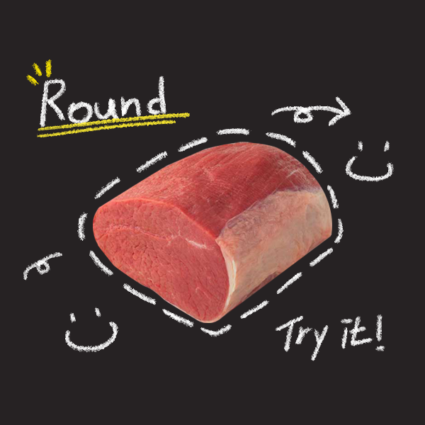
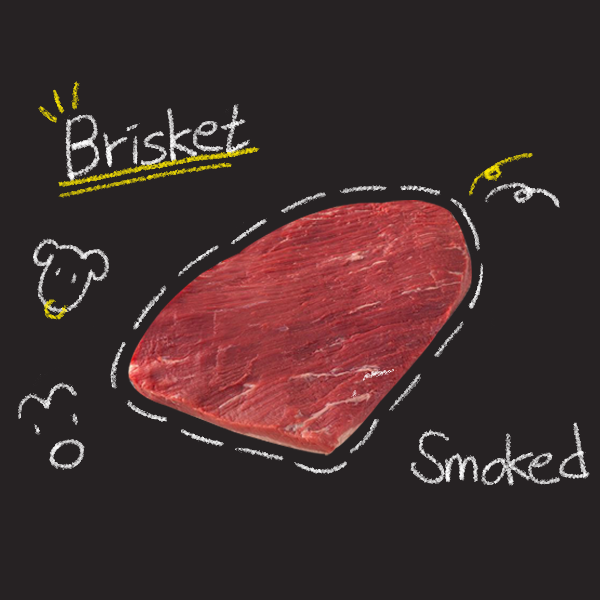
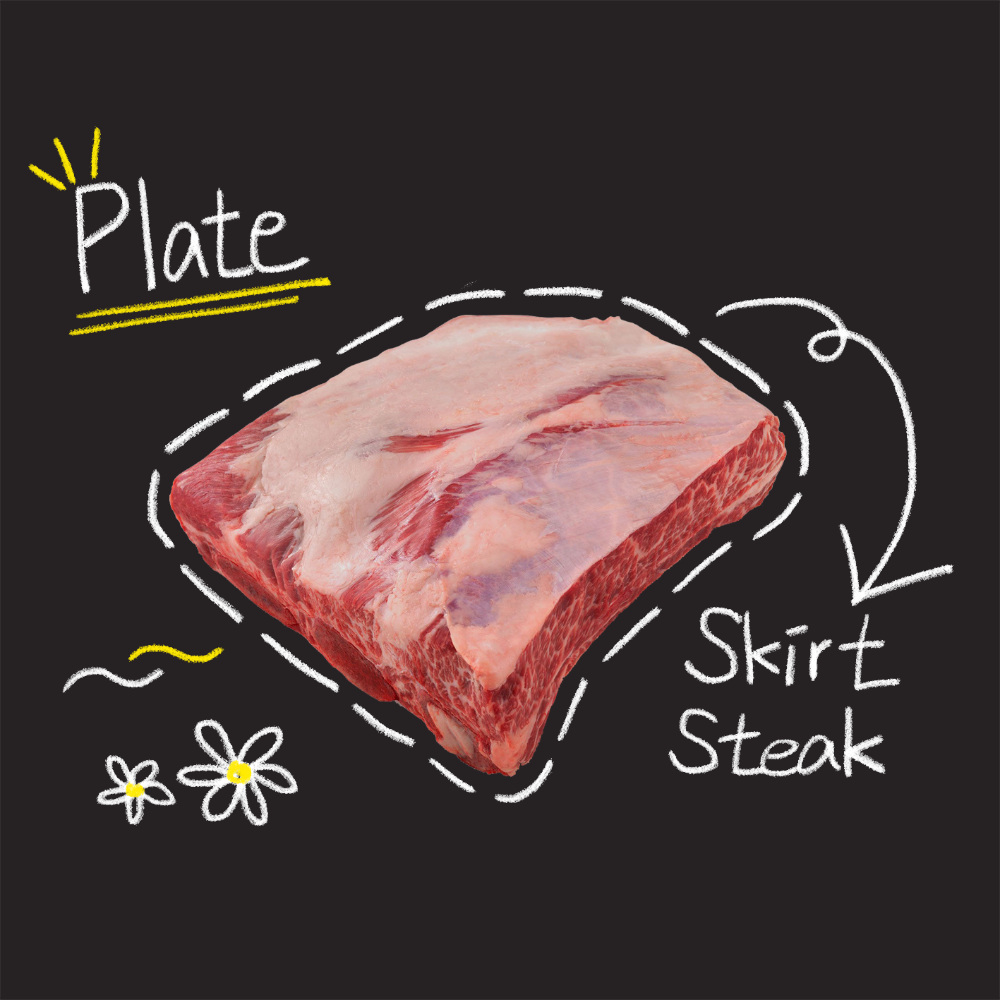
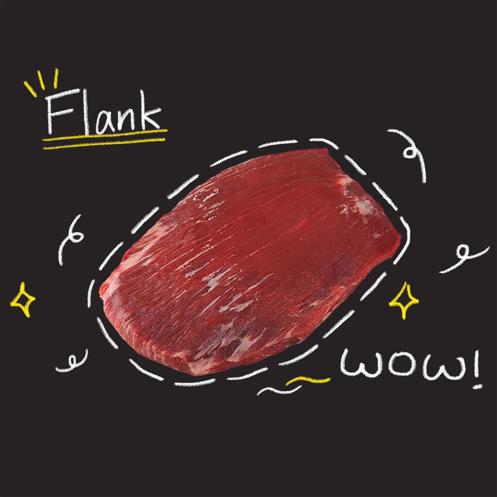

Chuck

보통 ‘목심’이라 칭하는 부위입니다.
특징: 운동량이 많은 소의 목덜미 부위에 있기 때문에 근간지방이나 근내지방의 함량이 적고, 근섬유다발이 다소 굵어 고기의 결이 부드럽지 않은 편입니다.
용도: 탕, 전골 또는 국거리로 조리해 먹는다면 최적의 맛을 느낄 수 있습니다.
좋은 목심 고르는 법: 지방이 고르게 분포돼 곱게 박혀있는 것 혹은 근육에 균일하게 많이 박혀 있는 고기가 좋습니다.
집에서 즐길 수 있는 최적의 조리법: ‘목심 샤브샤브’
Rib

보통 ‘갈비’라 칭하는 부위입니다.
특징: 일반적으로 살코기와 지방이 3겹의 층을 이루는 구조이며 표면에는 근막이 감싸여 있다.
용도: 양념하지 않고 칼집을 넣어 생갈비 구이에 이용한다면 최적의 맛을 느낄 수 있습니다.
좋은 갈비 고르는 법: 육색이 연한 선홍색을 띄며 지방의 분포가 조화롭게 되어 있는 고기일수록 좋습니다.
집에서 즐길 수 있는 최적의 조리법: '갈비살 구이'
Short Loin
보통 ‘채골살’이라 칭하는 부위입니다. 이 부위는 Sirloin(등심), Tenderloin(안심)을 포함하는 부위입니다.
특징: 제1등뼈에서 제13등뼈까지의 부위를 정형한 것입니다.
용도: 근육 내에 근내지방도 많아 마블링의 풍미가 풍부하고 맛도 좋으며 주로 구이 혹은 스테이크로 이용한다면 최적의 맛을 느낄 수 있습니다.
좋은 채골살 고르는 법: 고기 평가 기준에 의해 마블링 등급이 +가 많이 붙을 수록 좋은 고기이며, 육안으로 보았을 때 선홍빛과 흰색의 지방이 조화로운 고기일수록 좋습니다.
집에서 즐길 수 있는 최적의 조리법: '등심 스테이크', '안심 장조림'
Tender Loin

보통 ‘안심’이라 칭하는 부위입니다.
특징: 채끝 밑 복강 쪽, 즉 허리등뼈 끝자락의 복강안쪽 부분에 붙어 있는 단일근육을 지칭합니다. 안심살은 복강 안쪽에 위치하고 있기 때문에 운동량이 많지 않아 소고기 중 가장 부드럽습니다.
용도: 안심살은 저지방으로 담백하기 때문에 다이어트 요리에도 좋으며 주로 구이, 스테이크, 장조림으로 이용한다면 최적의 맛을 느낄 수 있습니다.
좋은 안심 고르는 법: 안심의 육색은 빠르게 변색하기 때문에 선홍빛을 띌 수록 신선함을 의미합니다.
집에서 즐길 수 있는 최적의 조리법: '안심 스테이크'
SirLoin

보통 ‘등심’이라 칭하는 부위입니다.
특징: 제 1등뼈에서 제 5등뼈까지 정형한 윗등심살, 제 6등뼈에서 제 9등뼈까지 정형한 꽃등심살, 제 10등뼈에서 제 13등뼈까지 정형한 아래등심살이라고 지칭합니다. 등뼈의 기수가 커질수록 지방의 함량은 적어지고 살코기의 비중이 늘어나는 경향이 있습니다.
용도: 지방이 많다면 스테이크, 지방이 적은 아랫등심살은 샤부샤부용으로 사용할 수 있습니다.
좋은 등심 고르는 법: 고기 평가 기준에 의해 마블링 등급이 +가 많이 붙을 수록 좋은 고기이며, 육안으로 보았을 때 선홍빛과 흰색의 지방이 조화로운 고기일수록 좋습니다.
집에서 즐길 수 있는 최적의 조리법: '등심 스테이크'
Round

보통 ‘우둔’이라 칭하는 부위입니다.
특징: 고기 덩어리가 큰 것에 비해 고기의 결이 거칠지 않고 굵은 근섬유들이 균일하게 연결되어 있으나, 고기 덩어리가 커서 부분마다 부드러움의 차이가 있습니다.
용도: 지방이 거의 없는 살코기이기 때문에 육회로 이용해도 좋지만, 고기 덩어리의 위치에 따라 조직감이 다를 수 있어 요리 용도에 따라 고기를 써는 두께에 주의해야 합니다. 주로 불고기, 주물럭, 산적, 육포, 장조림 등 다양한 요리에 이용할 수 있습니다
좋은 우둔 고르는 법: 지방층이 얇고, 선홍빛이 도는 고기일수록 우둔의 정석적인 부위입니다.
집에서 즐길 수 있는 최적의 조리법: '소고기 장조림', '육포'
Brisket

보통 ‘양지머리’라 칭하는 부위입니다.
특징: 양지머리를 구성하는 근육들은 운동량이 대단히 많은 근육들이기 때문에 지방이 거의 없고 질긴 것이 특징입니다.
용도: 육향이 워낙 좋기 때문에 오래 끓이면 고소한 육단백질의 맛 성분이 한없이 우러나옵니다. 그러므로 전골, 조림, 탕으로 요리하거나 고기의 결대로 잘 찢어지므로 장조림에 이용해도 좋습니다.
좋은 양지 고르는 법: 운동량이 많은 근육이라 육색이 약간 짙은 선홍색을 띠고 있다. 즉, 짙은 색을 띄어도 신선도가 결코 떨어진 고기가 아닙니다.
집에서 즐길 수 있는 최적의 조리법: '소고기 육수'
Plate

보통 ‘양지’라 칭하는 부위입니다.
특징: 근섬유가 굵고 거칠며, 고기의 결과 결 사이를 따라 지방의 침착도가 높은 편입니다. 양지를 이루는 근육들은 소가 호흡을 할 때 횡격막과 더불어 항상 운동을 하기 때문에 섬유질의 결체조직과 근막이 많고 고깃결이 거친 편입니다
용도: 마블링과 육즙이 좋기 때문에 구이용으로 이용해도 무난하지만, 고기의 결을 따라 잘 찢어지는 특성이 있어 육개장이나 장조림에 이용하는 것이 좋습니다.
좋은 양지 고르는 법: 근막과 근육이 적은 고기일수록 좋은 식감을 내지만 육수를 우리거나, 국거리로 사용할 경우 크게 차이가 없습니다.
집에서 즐길 수 있는 최적의 조리법:'양지 미역국'(국거리용)
Flank

보통 ‘치마살’이라 칭하는 부위입니다.
특징: 육색은 그리 짙지 않은 진홍색으로 고기의 결이 다소 거칠어 보이지만, 근섬유의 굵기가 그다지 굵지 않아 육질이 부드럽습니다
용도: 소고기 부위에서 씹는 맛이 가장 좋습니다. 치마살은 부드럽게 다발로 펼쳐진 고기의 결이 약하기 때문에 연한 소고기의 맛이 은근하게 나타납니다.
좋은 치마살 고르는 법: 고깃결 사이로 지방이 잘 침착되어 있고, 밝은 선홍빛을 띌수록 좋습니다.
집에서 즐길 수 있는 최적의 조리법:'치마살 육회'